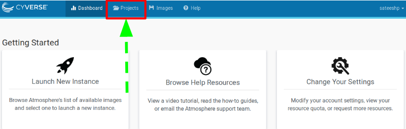

25. Accessing The Atmosphere Cloud¶
- Atmosphere, CyVerse’s cloud-computing platform allows you to launch your own isolated virtual machine (VM) image and software, using compute resources such as CyVerse-provided software suites, and pre-configured, frequently used analysis routines, relevant algorithms, and datasets.
To request access to Atmosphere, login to the CyVerse User Portal. In the Services menu under ‘MY SERVICES’ you should see Atmosphere listed as an option you can launch. If not, look uner the Available menu, and click the ‘REQUEST ACCESS’ link. You will receive an email requesting additional information.
- This is the first and last place in these lessons where it will matter if you are using PC, Mac, or Linux. After we connect to our virtual machines built using the same image; we will all be on the same operating system/computing environment.
- Documentation on how to use Atmosphere resources can be found here
25.1. SSH Client for WINDOWS users¶
- Windows-users will need to install a UNIX-ready terminal.
- We recommend - mobaxterm home edition
- Start a new session; Fill in your “remote host” the IP address of your virtual machine(see below). Then select “specify username” and enter your cyverse username; Click OK.
26. Login & Launch Instance¶
- Login to Atmosphere by clicking the “login” button towards the right-upper corner of the screen.

- Fill in your CyVerse username and password and click “LOGIN”

- Select the “Projects” tab and then click the “CREATE NEW PROJECT” button

- Give your Project folder a name (Description is optional). Then click “CREATE”.

- Click on your newly created project.
- Click “NEW” and then “Instance” from the dropdown menu to start up a new virtual machine.

- To select an image click on “Show All” tab and Search for “DCG-UNR-RNAseq” and choose the “DCG-UNR-RNAseq” image created by ‘sateeshp’.

- Basic options
- Instance Name: e.x., “workshop” or you can leave it default which is the image name.
- Base Image Version: “3.0”
- Project: select project folder to host the instance
- Allocation Source: should be your cyverse account
- Provider: “CyVerse Cloud - Marana”
- Instance size: Depending on your allocations, choose most suitable one.
- Recommended for this tutorial: “tiny1 (CPU: 1, Mem: 4GB, Disk: 30GB)”

Launch instance and wait for the build to be deployed (~ 5-10 minutes).
Note: During the build process..Be patient! Don’t reload!. Once the virtual machine is ready, the “Activity” column will show “N/A” and the “Status” column will turn green and “Active”.
building-->spawning-->deploying-->N/A
- Navigate back to ‘Projects’ and click on your new instance’s name to see more information related to the instance you just created!
- Copy the IP address of your instance.

27. SSH Secure-Login¶
- MACOS & LINUX users can open a Terminal window and Windows users start a new session in mobaxterm (see # Setup)
- Establish a secure-login to the instance by typing the following:
ssh your_cyverseusername@ip_address
- This should log you into CyVerse and you should see a screen like this:

- Enter ‘yes’ and then you will be asked for your CyVerse password.
Your cursor will not move or indicate you are typing as you enter your password. If you make a mistake, hit enter and you will be prompted again.
- Successful login should look something like below

To end your current session and close SSH connection, type ‘exit’

28. Instance Maintenance¶
28.1. Atmosphere Dashboard¶

28.2. Delete Instance¶
- To completely remove your instance, you can select the “Delete” button from the instance details page.
- This will open up a dialogue window. Select the “Yes, delete this instance” button.
- It may take Atmosphere a few minutes to process your request. The instance should disappear from the project when it has been successfully deleted.

28.3. Suspend Instance¶

Note: It is advisable to delete the machine if you are not planning to use it in future to save valuable resources. However if you want to use it in future, you can suspend it. Notice: IP address changes
28.4. Request More Allocation Units¶

29. Additional Features¶


30. Advanced Topics¶
- Transferring Data to and from an Instance
- Creating custom Atmosphere Images
- ssh-rsa-key for password-less login